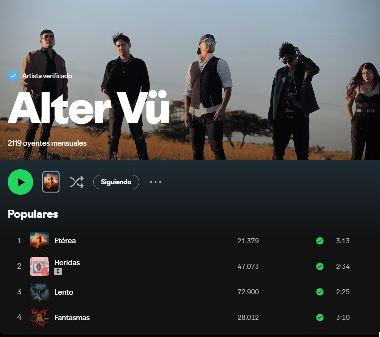
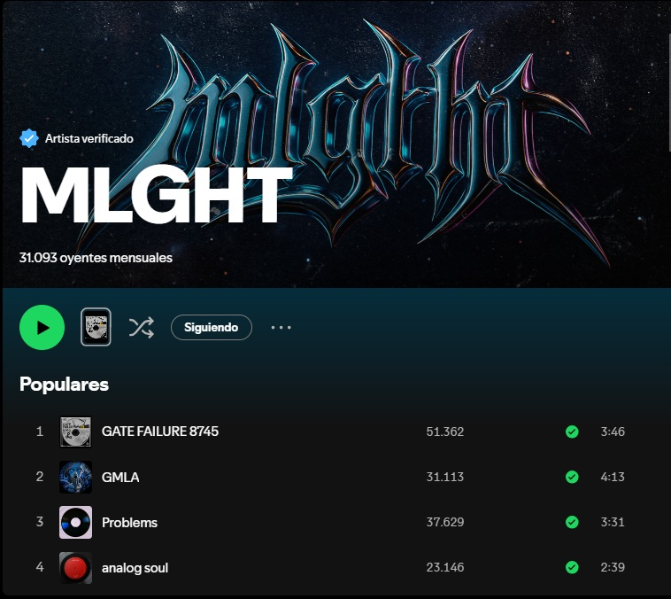
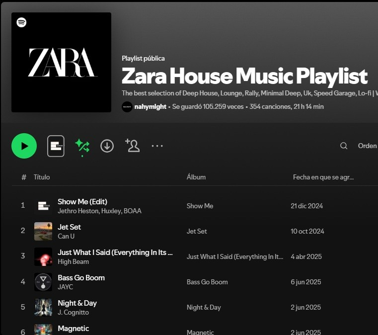

MIS PROYECTOS
Música y tecnología fusionadas



PROYECTO PLAYLIST
House Music
Playlist en la plataforma Spotify con más de 100k guardados en colaboración pagada con artistas de otros países, asegurando un lugar destacado en la lista.
100K+ Guardados
+200 Países
300+ Artistas